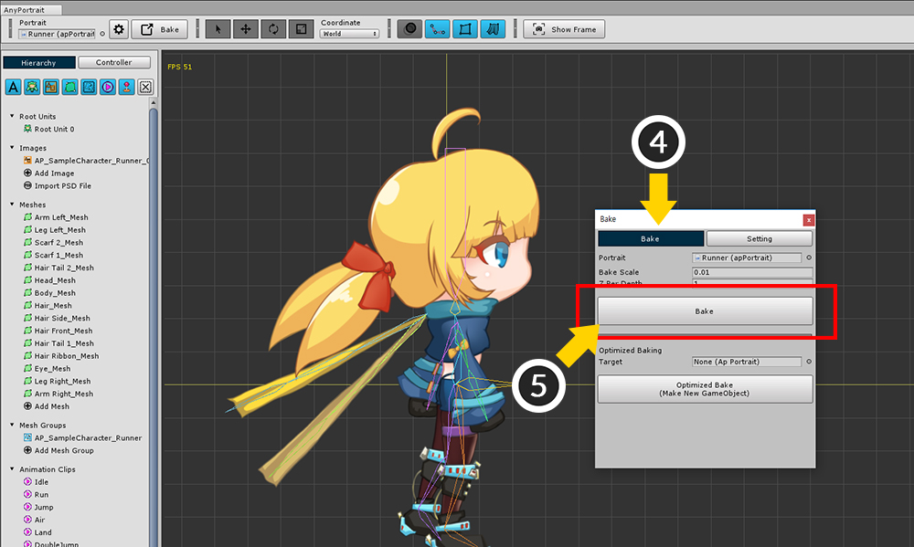
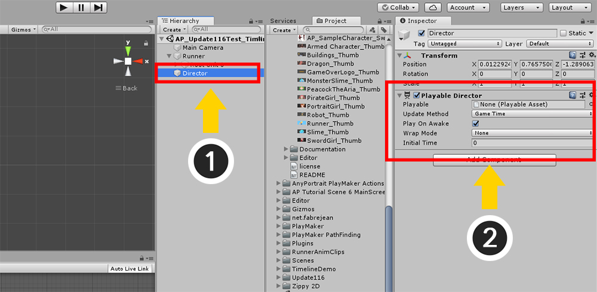
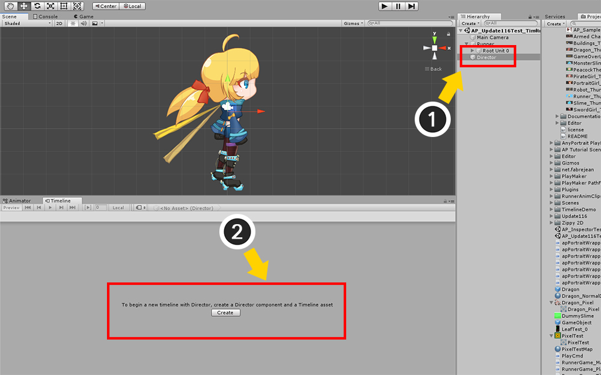
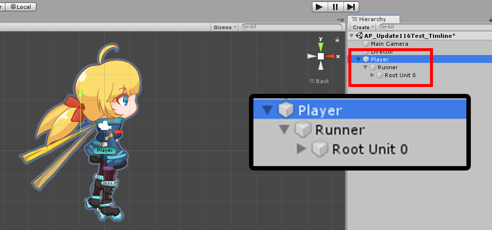
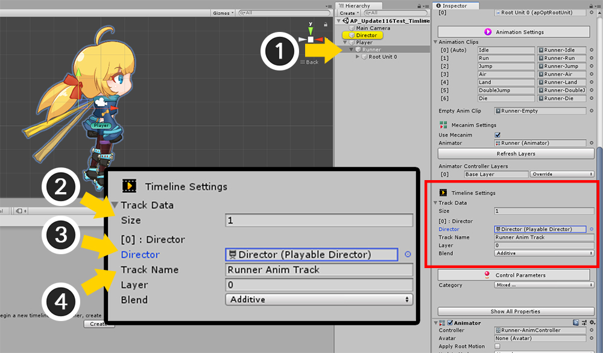
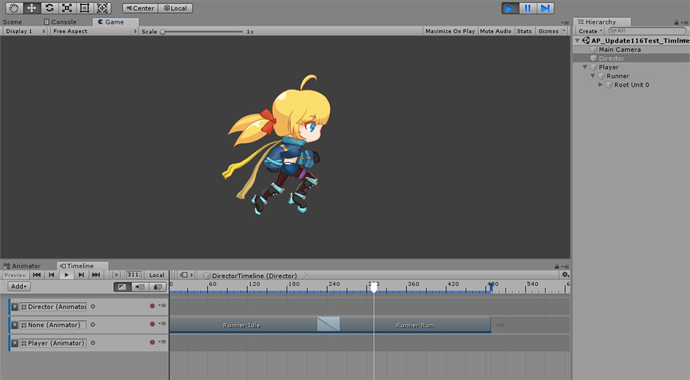
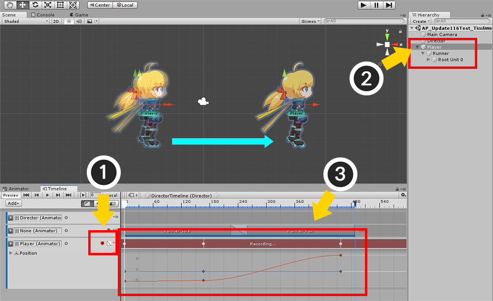
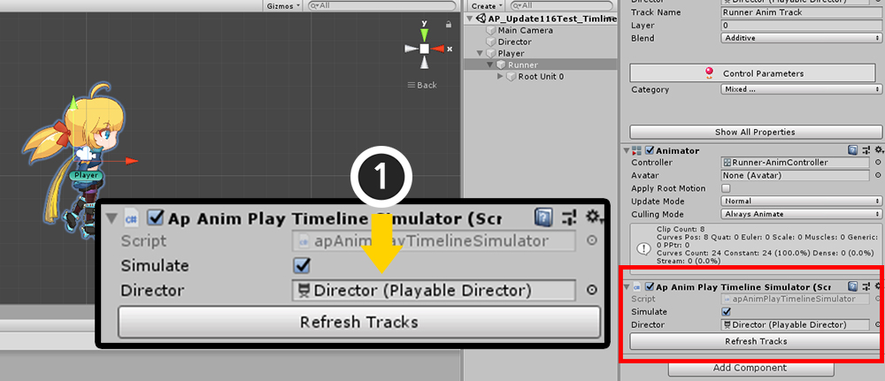
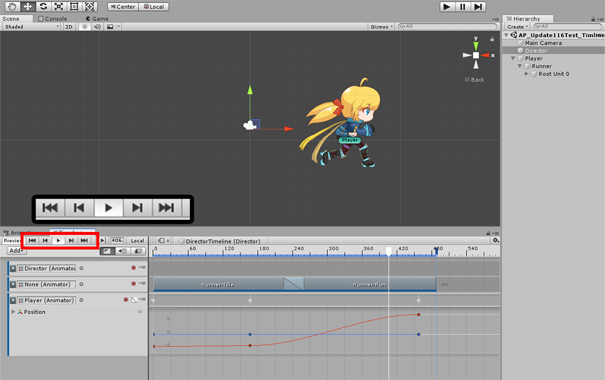

AnyPortrait > マニュアル > 「Timeline」利用
「Timeline」利用
1.1.6

Unityの「Timeline」は、ゲーム中に再生されるシネマティックシーンを作成する機能です。
シーケンスツールを利用して、アニメーションを組み合わせて制御することができます。
UnityのホームページでTimelineの説明を見ることができます。 （関連ページ）
AnyPortrait v1.1.6からUnityのTimelineを利用することができます。
Playable DirectorとTimeline Asset作成Track接続

Timelineは「Mecanim」と関連がある機能です。
したがってAnyPortraitのMecanimオプションをオンにします。
(1) Bakeボタンを押します。
(2) Settingタブを選択します。
(3) Mecanimオプションをオンにして、アニメーションクリップが保存されるパスを設定します。

(4) Bakeタブを選択します。
(5) Bakeボタンを押します。

キャラクターに「Animator」が追加されたことを見ることができます。
また、アニメーションクリップが作成された状態です。
このアニメーションクリップを利用して、Timelineを構成することができます。

Timelineを作成しましょう。
(1) 新しいGameObjectを作成します。ここで、「Director」という名前で作成しました。
(2) 生成されたGameObjectに「Playable Director」コンポーネントを追加します。

「Window > Sequencing > Timeline」メニューからTimelineエディタを開きます。
（Unityのバージョンに応じてメニューが異なる場合があります。）

Timelineエディタが開かれました。
(1) Playable Directorコンポーネントが追加されたDirectorを選択します。
(2) Timelineエディタで「Createボタン」を押して「Timeline Asset」を作成します。

Timeline Assetが生成され、これでTimelineを編集する準備ができました。

AnyPortraitで製作された文字（Runner）が、他のGameObject（Player）の子オブジェクトになるように作成します。
Mecanimを連動する場合は、ローカル座標が（0、0、0）に強制されるので、
このように、別のGameObjectを作成することをお勧め。
Timelineを連動するときにも、別の親GameObjectを作り、親GameObjectのTransformを制御することをお勧めします。

Timelineエディタで「Addボタン」を押して「Animation Track」を追加します。

追加された「トラック（Track）」をAnyPortraitと連動してみましょう。
(1) AnyPortraitのキャラクターと連動されるトラックを選択します。
(2) トラックの名前を指定します。ここでは「Runner Anim Track」に設定しました。
AnyPortraitは「トラックの名前」で連動さトラックを区分するので、この時に設定した名前を覚えておきましょう。

今度はキャラクターの位置を制御するトラックを作ってみましょう。
(1) 先に作成されたキャラクターの親である「Player」を (2) Timelineのトラックリストにドラッグ＆ドロップします。
(3) Playerのトラックが追加されました。

(1) AnyPortraitキャラクターを選択します。
(2) Inspector画面でTimeline Settings項目の「Track Data」のSizeを1に設定します。
(3) 「Director」項目にPlayable DirectorがあるDirectorを接続します。
(4) 「Track Name」項目に、作成したトラックの名前（「Runner Anim Track」）を指定します。
トラックと連動する設定について
Inspectorの画面で、トラックと連動することができ、その際、以下の特徴があります。
1) 複数のレイヤ
同じ「Playable Director」に2つ以上の「トラック」を接続すれば、複数のアニメーションレイヤが指定されたものと同じです。
「Layer」と「Blend」の値を変更して、複数の層の「処理順序」と「混合方式」を設定することができます。
2) 多数のPlayable Director指定
シーンに複数の「Playable Director」がある場合は、「Track Data」の両方に追加します。
再生されるPlayable Directorの制御のみを受け取ります。
もしすべてのPlayable Directorの再生が完了した場合、AnyPortraitのキャラクターはTimeline代わり「MecanimのAnimator」の制御を受けます。
3) スクリプトでTrack Data追加または削除する
スクリプトを利用してゲームが実行される中Playable Directorと接続することができます。
v1.1.6から提供されている次の関数を利用してみてください。
（詳細については、「関連ページ」を参照してください。）
public bool AddTimelineTrack( UnityEngine.Playables.PlayableDirector playableDirector, string trackName, int layer, apAnimPlayUnit.BLEND_METHOD blendMethod)
: Playable Directorのトラックと接続します。
トラックの名前とレイヤー情報を入力する必要があり、有効なトラックがない場合はfalseを返します。
public void RemoveInvalidTimelineTracks()
: 無効なすべてのトラックの情報を削除します。
public void RemoveAllTimelineTracks()
: すべてのトラックの情報を削除します。
public void UnlinkTimelinePlayableDirector(UnityEngine.Playables.PlayableDirector playableDirector)
: 入力されたPlayable Directorとの接続を解除します。
public void SetTimelineEnable(bool isEnabled)
: Timelineの制御を受け取るかどうかを設定します。
アニメーションクリップを配置し、キャラクターの位置を編集

トラックと連動になったら、もうアニメーションクリップをTimeline上に配置してみましょう。
Mecanim設定をオンにしてBakeをした場合は、アニメーションが「Animation Clip Asset」の形で保存されます。
トラックには、アニメーションクリップをドラッグして配置します。

ゲームを実行すると、Timelineが再生され、キャラクターのアニメーションも一緒に順番に再生されるのを見ることができます。

キャラクターを実際に動かしてたい場合は、「親GameObject」が登録されている別のトラックでアニメーションを作成します。
(1) トラックの「録画ボタン」を押します。
(2) 親GameObjectの「Player」を選択します。
(3) キーフレームにおいてキャラクターの位置を指定します。

再度ゲームを実行すると、キャラクターが前方に移動しながら、アニメーションが実行されます。
エディタでTimelineプレビュー
この段階まで完了したら、ゲーム中にTimelineによってアニメーションが実行されているのを見ることができます。
しかしながら、ゲームが実行されてないときにはTimelineが再生されてもAnyPortraitのキャラクターのアニメーションが再生されません。
AnyPortraitはエディタで自動的に更新がされず、別の入力がある場合にのみ更新されるからです。
そのため、ゲームが実行されてないときにもTimelineによって再生されるように、別のスクリプトがv1.1.6から提供されます。

apPortraitがあるAnyPortraitのキャラクターを選択し、「Add Componentボタン」を押します。
「AnyPortrait > Timeline Simulator」を選択します。

Timeline Simulator（apAnimPlayTimelineSimulator）がコンポーネントに追加されました。
(1) 作業中のPlayable Directorを接続します。

Timelineを編集中にもキャラクターのアニメーションが正しく実行されることを見ることができます。
「Timeline Simulator」の属性および注意点
- 「Simulate」をオンにするとTimelineが再生されるように連動されて再生され、逆に「Simulate」をオフにするとTimelineの制御を受けません。
- アニメーションクリップを追加したり、削除するときに、「Refresh Tracksボタン」を押して更新されたトラック情報が正常に認識されます。
- 「Timeline Simulator」は、編集中にのみ動作し、ゲームが実行されると、動作しません。
- Timelineが完成したら、「Timeline Simulator」コンポーネントを削除することをお勧めします。
トラックでのアニメーションクリップ情報と完成されたシネマティックシーン

トラックに配置されたアニメーションクリップの属性をInspector画面で変更することができます。
AnyPortraitは「Clip In」、「Speed Multiplier」属性の値をアニメーションの再生に反映されます。
- 「Clip In」を変更して、アニメーションの開始時点を変更することができます。
- 「Speed Multiplier」を変更して、アニメーションの再生速度を制御することができます。